In the previous session, we already learned the five main modelling steps for species distribution models (SDMs): (i) conceptualisation, (ii) data preparation, (iii) model fitting, (iv) model assessment, and (v) prediction.
We have already fitted simple species distribution models (SDMs) in session 4. Remember the five general model building steps: (i) conceptualisation, (ii) data preparation, (iii) model fitting, (iv) model assessment, and (v) prediction. In this practical, we will concentrate on steps (iv)-(v). We will learn how to validate SDMs, visualise the fitted species-environment relationships, and make predictions. For getting a deeper understanding of these single steps, I highly recommend studying more advanced reviews (Guisan and Zimmermann 2000; ???; Elith and Leathwick 2009) and textbooks on SDMs (Franklin 2010; Guisan, Thuiller, and Zimmermann 2017).
We will continue to work on the Ring Ouzel example of the previous session, using data from the Swiss Breeding Bird Atlas at 1 km resolution observed during the years 1993-1996 (Schmid et al. 1998). Environmental data were available from a study by Zurell et al. (2019) containing bioclimatic, topographic and remote-sensing based vegetation variables already matched to the breeding bird data. Last week, we already looked at correlation structure between predictor variables, ranked the predictors according to their univariate variable importance, estimated a full model and simplified this using the step() function. We saved these R objects and can simply load them now.
# Where have you stored the data? You may have to change the filepath!
load("GLMs_RingOuzel_session3.RData")Our workspace should now contain the results from the collinearity check (using select07() from Dormann et al. (2013)), the full model (containing only weakly correlated variables), and the final model that was obtained through backward-forward stepwise variable selection. We can simply continue to work with these models.
# Look at the full model again:
summary(m_full)##
## Call:
## glm(formula = as.formula(our_model_formula), family = "binomial",
## data = avi_dfst)
##
## Deviance Residuals:
## Min 1Q Median 3Q Max
## -2.6041 -0.0983 -0.0078 0.2978 3.4668
##
## Coefficients:
## Estimate Std. Error z value Pr(>|z|)
## (Intercept) -3.16417 0.23224 -13.625 < 2e-16 ***
## bio_5 -6.31733 0.42679 -14.802 < 2e-16 ***
## I(bio_5^2) -1.84614 0.17849 -10.343 < 2e-16 ***
## bio_2 0.68479 0.15757 4.346 1.39e-05 ***
## I(bio_2^2) -0.04853 0.05982 -0.811 0.41721
## bio_17 0.91937 0.30117 3.053 0.00227 **
## I(bio_17^2) -0.02963 0.07500 -0.395 0.69282
## bio_13 0.24284 0.32791 0.741 0.45895
## I(bio_13^2) -0.28237 0.08005 -3.527 0.00042 ***
## pet_103 -0.05101 0.06540 -0.780 0.43543
## I(pet_103^2) 0.04635 0.04166 1.113 0.26589
## prc_swrt -0.03196 0.22122 -0.144 0.88513
## I(prc_swrt^2) 0.07384 0.06603 1.118 0.26346
## ---
## Signif. codes: 0 '***' 0.001 '**' 0.01 '*' 0.05 '.' 0.1 ' ' 1
##
## (Dispersion parameter for binomial family taken to be 1)
##
## Null deviance: 2877.6 on 2534 degrees of freedom
## Residual deviance: 1078.5 on 2522 degrees of freedom
## AIC: 1104.5
##
## Number of Fisher Scoring iterations: 8# Look at the final model again:
summary(m_step)##
## Call:
## glm(formula = Turdus_torquatus ~ bio_5 + I(bio_5^2) + bio_2 +
## bio_17 + bio_13 + I(bio_13^2), family = "binomial", data = avi_dfst)
##
## Deviance Residuals:
## Min 1Q Median 3Q Max
## -2.5182 -0.1012 -0.0079 0.3142 3.5116
##
## Coefficients:
## Estimate Std. Error z value Pr(>|z|)
## (Intercept) -3.04176 0.20186 -15.068 < 2e-16 ***
## bio_5 -6.30236 0.40918 -15.403 < 2e-16 ***
## I(bio_5^2) -1.89134 0.17254 -10.962 < 2e-16 ***
## bio_2 0.59777 0.11504 5.196 2.03e-07 ***
## bio_17 0.82496 0.10540 7.827 4.98e-15 ***
## bio_13 0.27765 0.13905 1.997 0.0458 *
## I(bio_13^2) -0.30964 0.05886 -5.260 1.44e-07 ***
## ---
## Signif. codes: 0 '***' 0.001 '**' 0.01 '*' 0.05 '.' 0.1 ' ' 1
##
## (Dispersion parameter for binomial family taken to be 1)
##
## Null deviance: 2877.6 on 2534 degrees of freedom
## Residual deviance: 1081.9 on 2528 degrees of freedom
## AIC: 1095.9
##
## Number of Fisher Scoring iterations: 8# We can extract our species-environment-data from the model object:
avi_dfst <- m_step$data
# We can have a look at the ranking of the univariate importance
# of the predictor variables (in terms of AIC):
str(var_sel)## List of 3
## $ AIC : Named num [1:30] 1184 1202 1219 1239 1254 ...
## ..- attr(*, "names")= chr [1:30] "bio_5" "bio_10" "ddeg5" "ddeg0" ...
## $ cor_mat : num [1:30, 1:30] NA 0.998 0.987 -0.506 -0.519 ...
## ..- attr(*, "dimnames")=List of 2
## .. ..$ : chr [1:30] "bio_1" "bio_10" "bio_11" "bio_12" ...
## .. ..$ : chr [1:30] "bio_1" "bio_10" "bio_11" "bio_12" ...
## $ pred_sel: chr [1:6] "bio_5" "bio_2" "bio_17" "bio_13" ...Let’s also read in the original data. Last session, we standardised these prior to modelling. If we want to make predictions later on, we will also need to standardise all environmental data we want to predict to in the same way as our training data.
avi_dat <- read.table('data/Data_SwissBreedingBirds.csv', header=T, sep=',')
sp <- "Turdus_torquatus"
clim_vars <- names(avi_dat)[69:98]
avi_df <- avi_dat[,c(sp,clim_vars)]
# Store scaling coefficients for later:
scaled_center <- attributes(scale(avi_df[,-1], center=T, scale=T))$`scaled:center`
scaled_scale <- attributes(scale(avi_df[,-1], center=T, scale=T))$`scaled:scale`Before we can use our model for making predictions in space and time, we need to assess model behaviour and predictive performance.
When only looking at parameter estimates, it is sometimes difficult to envision how exactly the fitted response (the “niche” function) looks like. Also, for more complicate machine learning algorithms (that we will get to know in prac 5), there are no parameter estimates to look at, so we need different means to judge the plausibility of the fitted response. The simplest way is to plot the fitted values along the environmental gradients. Let’s first fit a simpler model with only two predictors.
# Which were the two most important, weakly correlated variables?
var_sel$pred_sel## [1] "bio_5" "bio_2" "bio_17" "bio_13" "pet_103" "prc_swrt"my_preds <- var_sel$pred_sel[1:2]
# Paste formula:
form_2pred <- paste('Turdus_torquatus ~',paste(my_preds, paste0('+ I(',my_preds,'^2)'),collapse=' + '))
# GLM with 2 predictors incl. linear and quadratic terms:
m_2pred <- glm( as.formula(form_2pred), family='binomial', data=avi_dfst)
# Inspect the model:
summary(m_2pred)##
## Call:
## glm(formula = as.formula(form_2pred), family = "binomial", data = avi_dfst)
##
## Deviance Residuals:
## Min 1Q Median 3Q Max
## -1.9501 -0.1308 -0.0139 0.5665 3.4088
##
## Coefficients:
## Estimate Std. Error z value Pr(>|z|)
## (Intercept) -2.76187 0.18647 -14.811 <2e-16 ***
## bio_5 -5.86462 0.37095 -15.810 <2e-16 ***
## I(bio_5^2) -1.93028 0.16280 -11.857 <2e-16 ***
## bio_2 -0.10740 0.08137 -1.320 0.187
## I(bio_2^2) -0.04854 0.05113 -0.949 0.342
## ---
## Signif. codes: 0 '***' 0.001 '**' 0.01 '*' 0.05 '.' 0.1 ' ' 1
##
## (Dispersion parameter for binomial family taken to be 1)
##
## Null deviance: 2877.6 on 2534 degrees of freedom
## Residual deviance: 1176.1 on 2530 degrees of freedom
## AIC: 1186.1
##
## Number of Fisher Scoring iterations: 8From the GLM object we can easily extract the fitted values, and plot them against each of the two environmental predictors.
# Inspect the model object:
str(m_2pred,1)par(mfrow=c(1,2))
plot(avi_dfst$bio_5, m_2pred$fitted.values, pch=19, ylim=c(0,1), xlab='Bio_5', ylab='Occurrence prob.')
plot(avi_dfst$bio_2, m_2pred$fitted.values, pch=19, ylim=c(0,1), xlab='Bio_2', ylab='Occurrence prob.')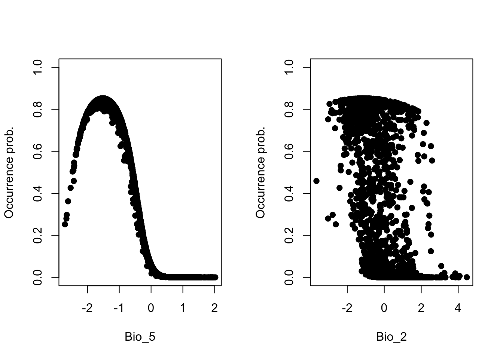
These point clouds already give quite a good impression how the response curve could look like, but also have a lot of “noise”. Two visualise the estimated occurrence probability for each point combination of the two environmental predictors, we can use the predict() function. This function is available for most SDM algorithms.
# If we do not provide "newdata", then predict() should simply return the fitted values:
head(predict(m_2pred, type='response'))## 1 2 3 4 5
## 8.307735e-01 8.308033e-04 9.968185e-02 6.535483e-01 8.279949e-01
## 6
## 2.084156e-05head(m_2pred$fitted)## 1 2 3 4 5
## 8.307735e-01 8.308033e-04 9.968185e-02 6.535483e-01 8.279949e-01
## 6
## 2.084156e-05# Now we want to make predictions for all combinations of the two predictor variables
# and along their entire environmental gradients:
xyz <- expand.grid(
# We produce a sequence of environmental values within the predictor ranges:
seq(min(avi_dfst[,my_preds[1]]),max(avi_dfst[,my_preds[1]]),length=50),
seq(min(avi_dfst[,my_preds[2]]),max(avi_dfst[,my_preds[2]]),length=50)
)
names(xyz) <- my_preds
xyz$z <- predict(m_2pred, newdata=xyz, type='response')
summary(xyz)## bio_5 bio_2 z
## Min. :-2.7076 Min. :-3.6673 Min. :0.0000000
## 1st Qu.:-1.5499 1st Qu.:-1.6757 1st Qu.:0.0000764
## Median :-0.3440 Median : 0.3988 Median :0.1739732
## Mean :-0.3440 Mean : 0.3988 Mean :0.3068951
## 3rd Qu.: 0.8619 3rd Qu.: 2.4734 3rd Qu.:0.6378746
## Max. : 2.0196 Max. : 4.4650 Max. :0.8519471# Now, we have a 3D data structure and want to visualise this.
# Here, I first set a color palette
library(RColorBrewer)
cls <- colorRampPalette(rev(brewer.pal(11, 'RdYlBu')))(100)
library(lattice)
# Now, we plot the response surface
wireframe(z ~ bio_5 + bio_2, data = xyz, zlab = list("Occurrence prob.", rot=90), drape = TRUE, col.regions = cls, scales = list(arrows = FALSE), zlim = c(0, 1))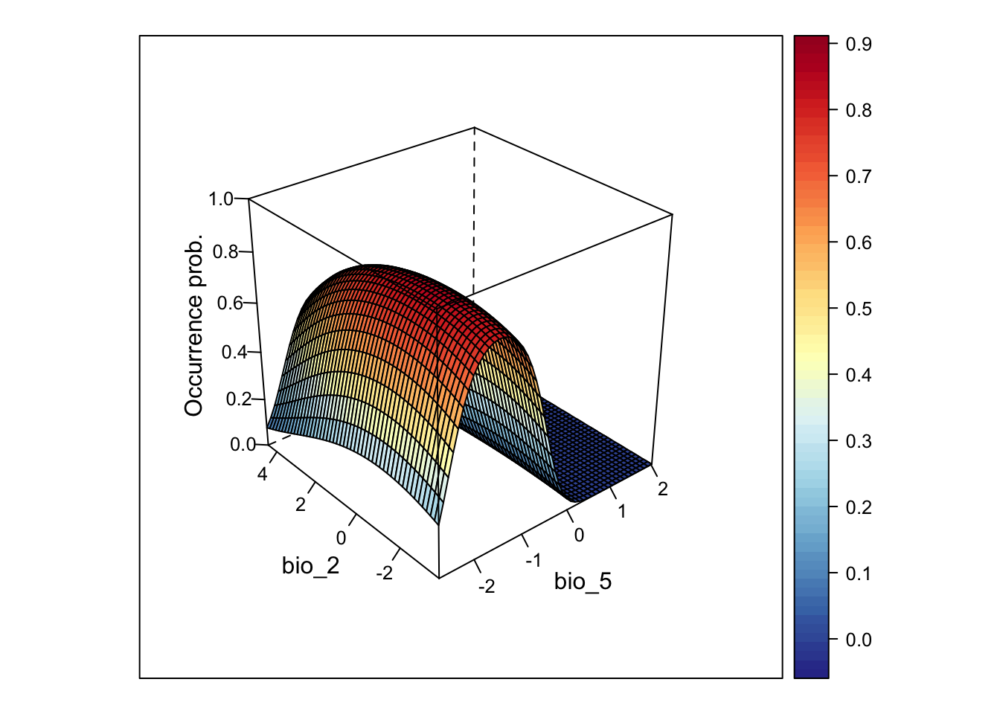
# We can also rotate the axes to better see the surface
wireframe(z ~ bio_5 + bio_2, data = xyz, zlab = list("Occurrence prob.", rot=90), drape = TRUE, col.regions = cls, scales = list(arrows = FALSE), zlim = c(0, 1), screen=list(z = -160, x = -70, y = 3))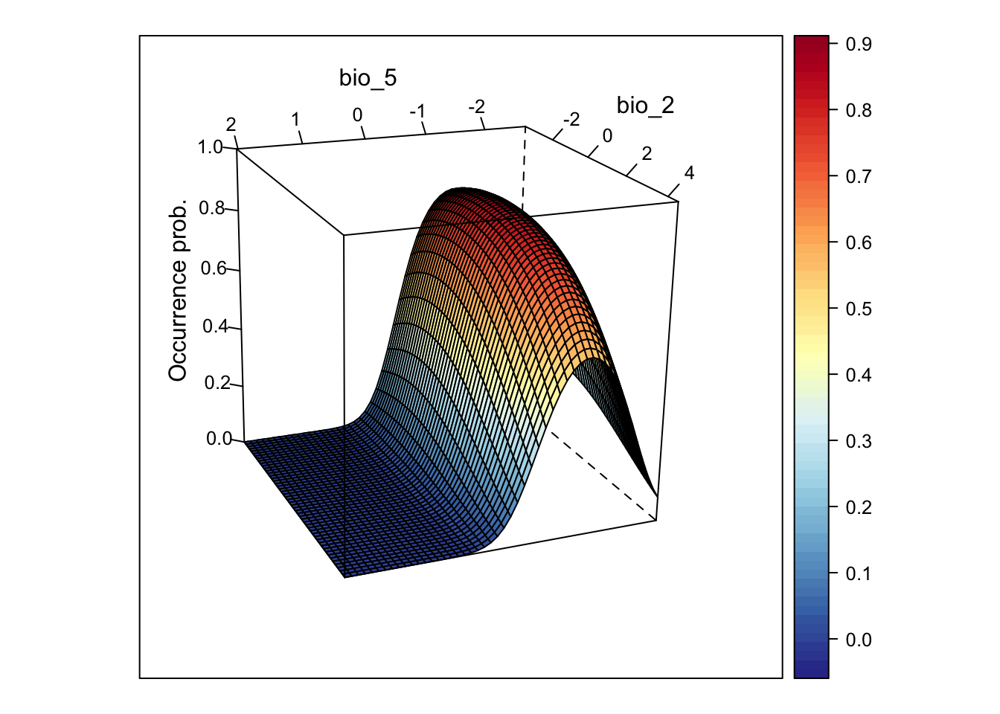
This looks very nice. However, if the model gets more complicated and contains more variables than just two, how can we then visualise it?
One way is to cut the response surface into slices. Most often, we simply plot the response along on environmental gradients while keeping all other gradients constant at their mean. We call this “partial response plots”.
# Again, we make a new data frame containing the two predictors. However, we only produce a sequence of environmental values for one of the predictors while keeping the other constant at its means.
par(mfrow=c(1,2))
# Run through both predictors:
for (i in 1:2){
xyz <- data.frame(
# Sequence for one predictor:
seq(min(avi_dfst[,my_preds[i]]),max(avi_dfst[,my_preds[i]]),length=50),
# Calculate the mean of the other predictor:
mean(avi_dfst[,my_preds[ ((i)%%2)+1 ]])
)
names(xyz) <- c(my_preds[i], my_preds[-i])
xyz$z <- predict(m_2pred, newdata=xyz, type='response')
plot(xyz[,my_preds[i]],xyz$z,type='l', ylim=c(0,1), xlab=my_preds[i], ylab='Occurrence probability')
}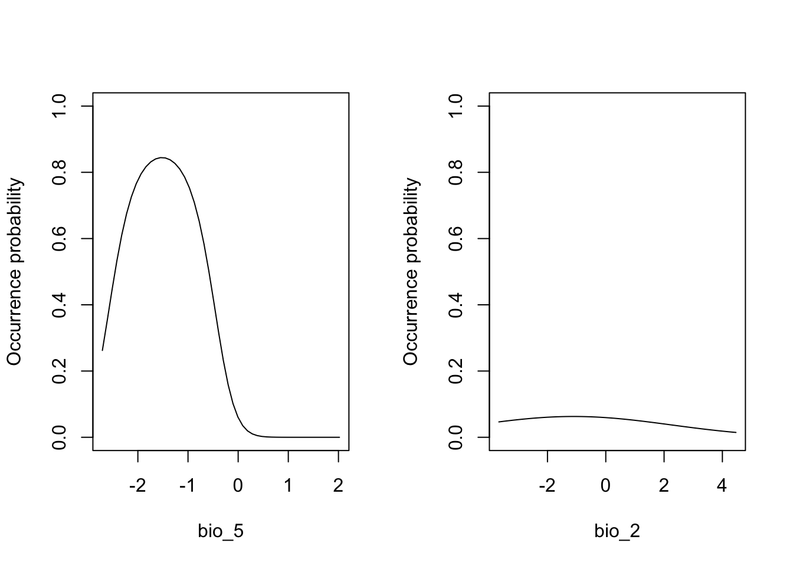
Let’s go back to our m_step model and plot the response curves for all environmental predictors in that model:
# Variables in the model:
predvars <- unique(c(names(coef(m_step))[-1][-grep('\\^',names(coef(m_step))[-1])],
sub('\\^2\\)','',sub('I\\(','',grep('\\^',names(coef(m_step))[-1],value=T)))))
predvars## [1] "bio_5" "bio_2" "bio_17" "bio_13"par(mfrow=c(2,2), mar=c(3,3,1,1)+.1, tcl=-.15, mgp=c(1.4,.3,0))
for (i in seq_len(length(predvars))){
xyz <- data.frame(
seq(min(avi_dfst[,predvars[i]]),max(avi_dfst[,predvars[i]]),length=50),
matrix(colMeans(avi_dfst[,predvars[-i]]),ncol=(length(predvars)-1))
)
names(xyz) <- c(predvars[i], predvars[-i])
xyz$z <- predict(m_step, newdata=xyz, type='response')
plot(xyz[,predvars[i]],xyz$z, type='l', ylim=c(0,1), xlab=predvars[i], ylab='Occurrence probability')
}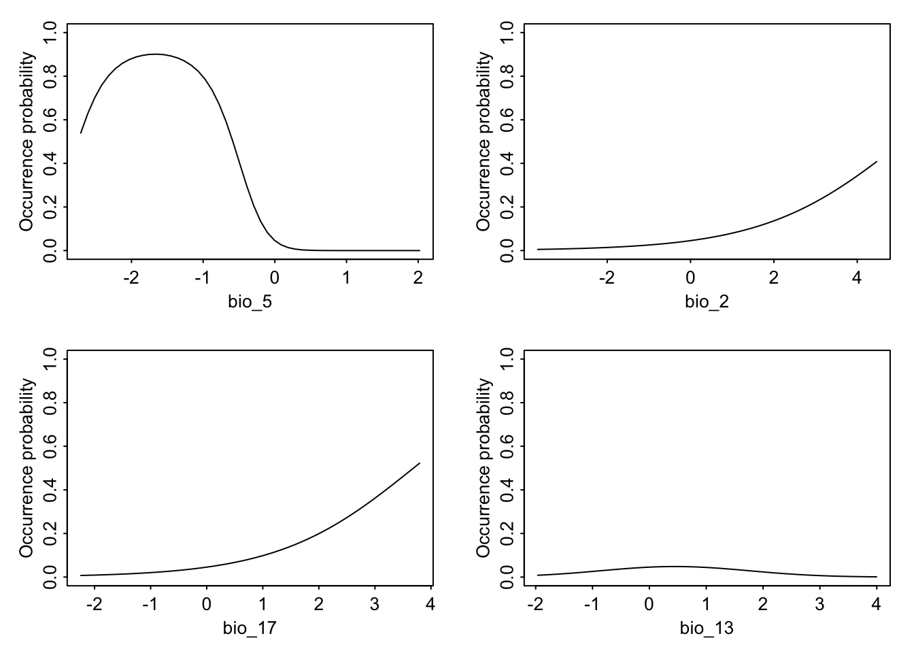
Partial response curves only show the response of one variable while the others are kept constant at their mean. For very complex models, especially non-parametric methods that fit interactions implicitly, this does not give a full picture of the potential response. We therefore implemented “inflated response curves” some years ago, that do not only keep the other variables constant at their mean, but also at their median and other quantiles (Zurell, Elith, and Schroeder 2012). “Inflated response curves” plot 2D-versions of the multivariate response surfaces.
Codes for plotting inflated response curves are available from github and we need to source these before plotting.
# Download code for "Inflated response curves" from github:
script<-readLines("https://raw.githubusercontent.com/damariszurell/Rcodes_MapNovelEnvironments_SDMs/master/appendixS1_functions.r")
eval(parse(text = script))
# Inflated response curves of our two predictor model:
par(mfrow=c(1,2))
inflated.response(m_2pred, avi_dfst[,my_preds], method="stat6", lwd = 3) 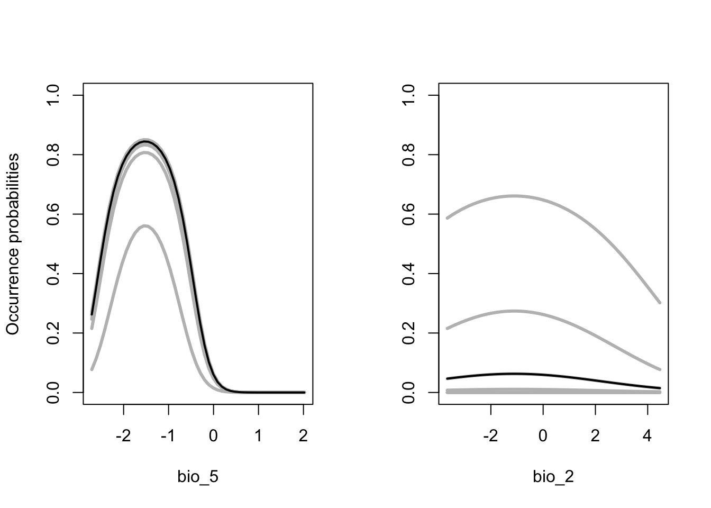
# Inflated response curves of our final model:
par(mfrow=c(2,2), mar=c(3,3,1,1)+.1, tcl=-.15, mgp=c(1.4,.3,0))
inflated.response(m_step, avi_dfst[,predvars], method="stat6", lwd = 3) 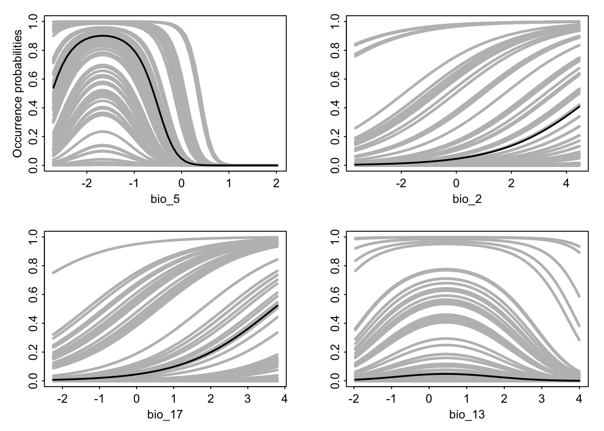
In the previous session, we already learned about the measure “explained deviance” that tells us something about the goodness-of-fit, meaning how well the model fits the data.
library(ecospat)
ecospat.adj.D2.glm(m_2pred)## [1] 0.5906583ecospat.adj.D2.glm(m_step)## [1] 0.623134Even our simple two-predictor model has a high explanatory value. However, often we are not only interested in how well our model fits the data but how robust the model is against changes in the input data and, thus, how robust predictions to other places and times might be. This assessment of model performance is often referred to as validation or evaluation. Evaluating the model on the calibration or training data is often referred to as internal validation (“resubstitution”) (Araujo et al. 2005). This generally gives a too optimistic picture of model performance. It is better to evaluate the model using data that have not been used for model fitting. One way is to split the data and only train the model on some proportion of the data and validate it on the hold-out data. Potential procedures are repeated split-samples (e.g. splitting into 70% training and 30% test data and repeat several times) and k-fold cross-validation (e.g. 5-fold or 10-fold), where the data are split into k portions, the kth portion is held out for validation and the procedure is repeated k times. If these folds are stratified in geographic or environmental space, we talk of spatial block cross-validation and environmental block cross-validation (Roberts et al. 2017).
Here, we will use 5-fold cross-validation as example. First, we build a small function for making predictions to 5-fold data.
library(dismo)
cross.val <- function(model, k=5, data = model$data){
# Ensure the dismo package is loaded for "kfold" function:
require(dismo)
ks <- kfold(model$data, k = k, by = model$data[,as.character(formula(model)[2])])
crossval_preds <- data.frame(row = row.names(data),
crossval_preds = numeric(length = nrow(data)))
for(i in seq_len(k)){
train <- data[ks!=i,]
test <- data[ks==i,]
modtmp <- update(model, data = train)
crossval_preds[which(ks==i),2] <-
predict(modtmp, newdata = test, type = 'response')
}
return(crossval_preds)
}Now we can use this function to split our data into 5 folds, re-calibrate the model using only 4/5 of the original data and predict the model to the hold-out 1/5 of the data.
preds_cv <- cross.val(m_2pred)We receive a data frame containing for each original row entry a cross-validation prediction. We can now compare the fitted values on the training data and the predictions on the cross-validation data.
plot(m_2pred$fitted.values, preds_cv[,2], xlab='Fitted values', ylab='Predicted values from CV')
abline(0,1,col='red',lwd=2)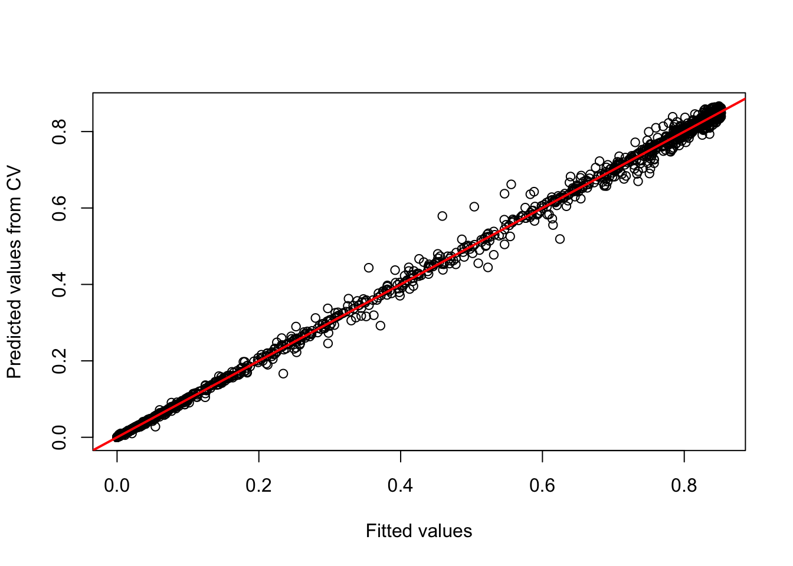
Now, we want to know how well our model predicts the observations. Different measures are available for quantifying this. A lot of these measures are threshold-dependent. You have probably realised that our model predicts a continuous response, the probability of occurrence, while our observations are binary. Many performance measures rely on comparisons like “How many presence observations does the model correctly predict as presence”. In order to answer that we first need to convert the continuous probabilities into binary predictions. Different thresholds are introduced in Liu et al. (2005). Most of these are implemented in the PresenceAbsence package in the optimal.thresholds function.
library(PresenceAbsence)
# We first prepare our data:
thresh_dat <- data.frame(
ID = seq_len(nrow(avi_dfst)),
obs = avi_dfst$Turdus_torquatus,
pred = m_2pred$fitted)
thresh_dat_cv <- data.frame(
ID = seq_len(nrow(avi_dfst)),
obs = avi_dfst$Turdus_torquatus,
pred = preds_cv[,2])
# Then, we find the optimal thresholds:
thresh <- optimal.thresholds(DATA= thresh_dat)Now, we can compare observed vs. predicted presences and absences based on these tresholds. For this, we take our predictions from the cross-validation. The comparison is easiest illustrated in a confusion matrix, for example using the function cmx in the PresenceAbsence package.
for (i in 1:9) {
print(as.character(thresh[i,1]))
print(cmx(DATA= thresh_dat_cv, threshold=thresh[i,2]))
print('---------------')
}## [1] "Default"
## observed
## predicted 1 0
## 1 548 171
## 0 98 1718
## [1] "---------------"
## [1] "Sens=Spec"
## observed
## predicted 1 0
## 1 580 199
## 0 66 1690
## [1] "---------------"
## [1] "MaxSens+Spec"
## observed
## predicted 1 0
## 1 594 215
## 0 52 1674
## [1] "---------------"
## [1] "MaxKappa"
## observed
## predicted 1 0
## 1 594 215
## 0 52 1674
## [1] "---------------"
## [1] "MaxPCC"
## observed
## predicted 1 0
## 1 561 180
## 0 85 1709
## [1] "---------------"
## [1] "PredPrev=Obs"
## observed
## predicted 1 0
## 1 505 140
## 0 141 1749
## [1] "---------------"
## [1] "ObsPrev"
## observed
## predicted 1 0
## 1 610 273
## 0 36 1616
## [1] "---------------"
## [1] "MeanProb"
## observed
## predicted 1 0
## 1 610 273
## 0 36 1616
## [1] "---------------"
## [1] "MinROCdist"
## observed
## predicted 1 0
## 1 594 215
## 0 52 1674
## [1] "---------------"Have a look at Liu et al. (2005) to see which thresholds they recommend. Here, we will use the threshold that maximises the sum of sensitivity and specificity:
cmx_maxSSS <- cmx(DATA= thresh_dat_cv, threshold=thresh[3,2])From such a confusion matrix, we can calculate different evaluation criteria. For example,
- the proportion of correctly classified test observations pcc
- the proportion of correctly classified presences, the sensitivity or true positive rate
- the proportion of correctly classified absences, the specificity or true negative rate
pcc(cmx_maxSSS, st.dev=F)## [1] 0.8946746sensitivity(cmx_maxSSS, st.dev=F)## [1] 0.9195046specificity(cmx_maxSSS, st.dev=F)## [1] 0.8861832Other measures are Kappa and TSS (the true skill statistic). Allouche, Tsoar, and Kadmon (2006) explain how to calculate these.
Kappa(cmx_maxSSS, st.dev=F)## [1] 0.7439294# TSS is not implemented. We write the function ourselves:
TSS = function(cmx){
require(PresenceAbsence)
sensitivity(cmx, st.dev=F)+specificity(cmx, st.dev=F)-1
}
TSS(cmx_maxSSS) ## [1] 0.8056878According to Araujo et al. (2005), Kappa>0.4 indicate good predictions. For TSS, we often assume TSS>0.5 to indicate good predictions.
The most common evaluation statistic that avoids thresholding the data is AUC - the area under the receiver-operating characteristic (ROC) curve. ROC curves are generated by calculating sensitivity (true positive rate) and specificity (true negative rate) for many thresholds along the entire range of predicted probabilities. Then, (1-specificity) is plotted on the x-axis against sensitivity on the y axis. The area under this curve is called the AUC. The further the generated curve deviates from a the 1:1 line towards the upper-left corner, the better the model predicts presence/absence of a species. If we would take a random presence and a random absence from our observations and make predictions, than AUC can be interpeted as the chance of assigning a higher predicted occurrence probability to the presence compared to the absence point. Typically, we regard AUC>0.7 as indicating fair predictions (Araujo et al. 2005).
library(AUC)
# Let's have a look a the ROC curve:
roc_cv <- roc(preds_cv[,2], as.factor(avi_dfst$Turdus_torquatus))
plot(roc_cv, col = "grey70", lwd = 2)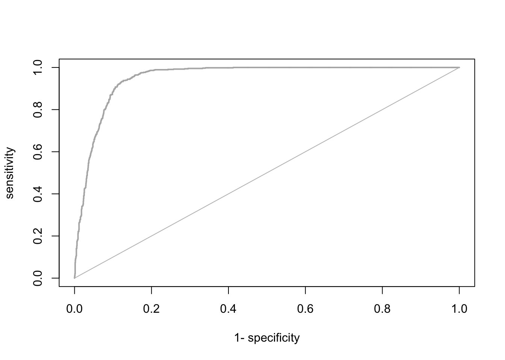
# Compute the AUC:
auc(roc_cv)## [1] 0.9513281It seems our model is performing pretty well on hold-out data. We can thus attempt making predictions in space and time.
Please be aware that many packages contain functions for evaluatinng SDMs. As always you have to find your own way. Here, I provide merely examples.
We have already learned how to make predictions using the function predict and also using the argument newdata. All we need for transferring our model to other places and times are the respective environmental variables.
As we have learned in previous sessions, we can download current and future climate layers from databased such as WorldClim and [CHELSA](http://chelsa-climate.org/.
# First set your file path that you want to download climate data to or where you have stored climate data already.
my_filepath <- 'data/clim_data'library(raster)
# Please note that you have to set download=T if you haven't downloaded the data before:
bio_curr <- getData('worldclim', var='bio', download=F, res=0.5, lon=5.5, lat=45.5, path=my_filepath)
# Please note that you have to set download=T if you haven't downloaded the data before:
bio_fut <- getData('CMIP5', var='bio', download=F, res=0.5, rcp=45, model='NO', year=50, path=my_filepath)
# The names of these raster don't match the bioclim names in our bird data.
names_wc_curr <- names(bio_curr)
names_wc_curr <- sub('bio','bio_',sub('_16','',names_wc_curr))
names_wc_fut <- names(bio_fut)
names_wc_fut <- sub('no45bi50','bio_',names_wc_fut)We will use a background mask of Switzerland to clip the data. This mask is in Swiss coordinates, which is the target coordinate system, and we thus need to reproject the worldclim layers. To speed things up, we will first crop the climate layers.
bg <- raster('/vsicurl/https://damariszurell.github.io/SDM-Intro/CH_mask.tif')
ch_ext <- c(5, 11, 45, 48)
# Crop and reproject current climate
bio_curr <- crop(bio_curr, ch_ext)
bio_curr <- projectRaster(bio_curr, bg)
bio_curr <- resample(bio_curr, bg)
bio_curr <- mask(bio_curr, bg)
names(bio_curr) <- names_wc_curr
# All temperature related bioclim variables (except isothermality bio3) need to be rescaled
for (i in c(1:2,4:11)) bio_curr[[i]] <- bio_curr[[i]]/10
# Crop and reproject current climate
bio_fut <- crop(bio_fut, ch_ext)
bio_fut <- projectRaster(bio_fut, bg)
bio_fut <- resample(bio_fut, bg)
bio_fut <- mask(bio_fut, bg)
names(bio_fut) <- names_wc_fut
# All temperature related bioclim variables (except isothermality bio3) need to be rescaled
for (i in c(1:2,4:11)) bio_fut[[i]] <- bio_fut[[i]]/10Now, we can make continuous predictions and threshold them to receive binary predictions.
# Prepare data frames
bio_curr_df <- data.frame(rasterToPoints(bio_curr))
bio_fut_df <- data.frame(rasterToPoints(bio_fut))
# Scale environmental variables analogous to training data
bio_curr_df[,names_wc_curr] <- scale(bio_curr_df[,names_wc_curr], center=scaled_center[names_wc_curr], scale=scaled_scale[names_wc_curr])
bio_fut_df[,names_wc_fut] <- scale(bio_fut_df[,names_wc_fut], center=scaled_center[names_wc_fut], scale=scaled_scale[names_wc_fut])
# Make continuous predictions:
bio_curr_df$pred_glm <- predict(m_2pred, newdata= bio_curr_df, type="response")
bio_fut_df$pred_glm <- predict(m_2pred, newdata= bio_fut_df, type="response")
# Make binary predictions:
bio_curr_df$bin_glm <- ifelse(bio_curr_df$pred_glm >= thresh[3,2], 1, 0)
bio_fut_df$bin_glm <- ifelse(bio_fut_df$pred_glm >= thresh[3,2], 1, 0)
# Make raster stack of predictions to current environment:
r_pred_curr <- rasterFromXYZ(bio_curr_df[,!names(bio_curr_df)%in%names_wc_curr])
plot(r_pred_curr, axes=F)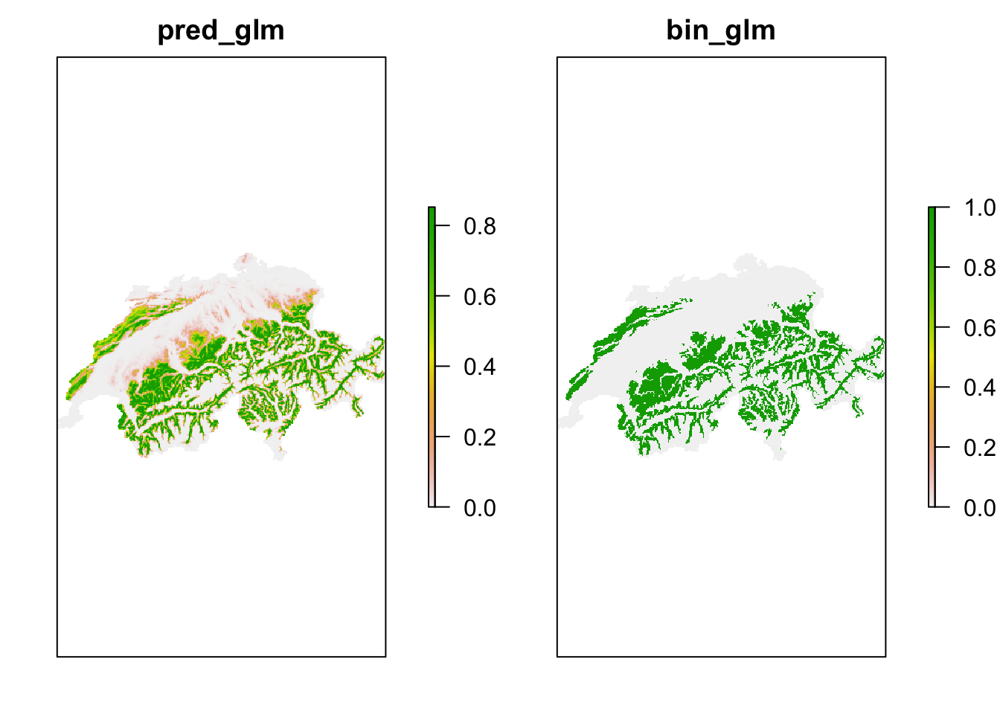
# Make raster stack of predictions to future environment:
r_pred_fut <- rasterFromXYZ(bio_fut_df[,!names(bio_fut_df)%in%names_wc_fut])
plot(r_pred_fut, axes=F)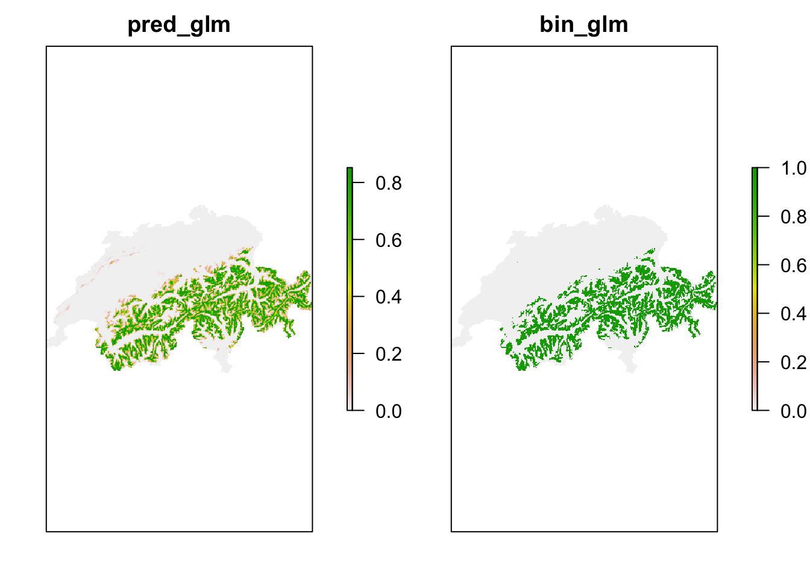
Novel environments are conditions that were not realised in the sampled data but are realised in the projection data. For example, in the future it may be warmer than today. If the entire niche of the species is encompassed by data, then the model does not need to extrapolate even if the projection data contain some novel environments. Mostly, novel environments only prove problematic if the niche is truncated in the sampled data (Zurell, Elith, and Schroeder 2012). Novel environments can be assessed in different ways. MESS (Multivariate environmental similarity surface) maps are contained in the dismo package and described in Elith, Kearney, and Phillips (2010). They assess for each environmental variables separately whether the projection data contain novel conditions beyond the sampled range.
# MESS maps from the dismo package:
r.mess <- mess(bio_fut[[my_preds]], avi_df[,my_preds])
plot(r.mess, axes=F)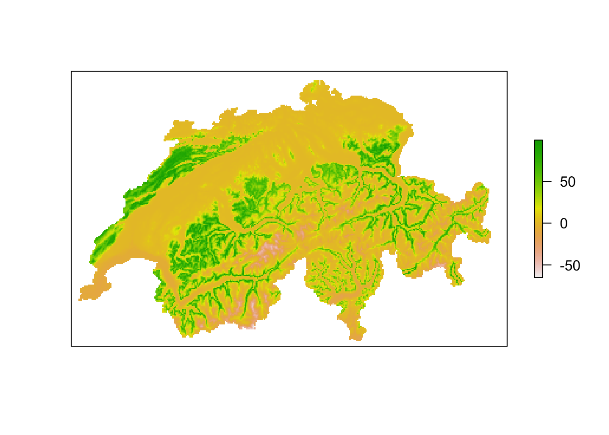
# Negative values indicated dissimilar=novel environments:
r.mess.mask <- r.mess<0
r.mess.mask <- mask(r.mess.mask,bg)
plot(r.mess.mask, axes=F)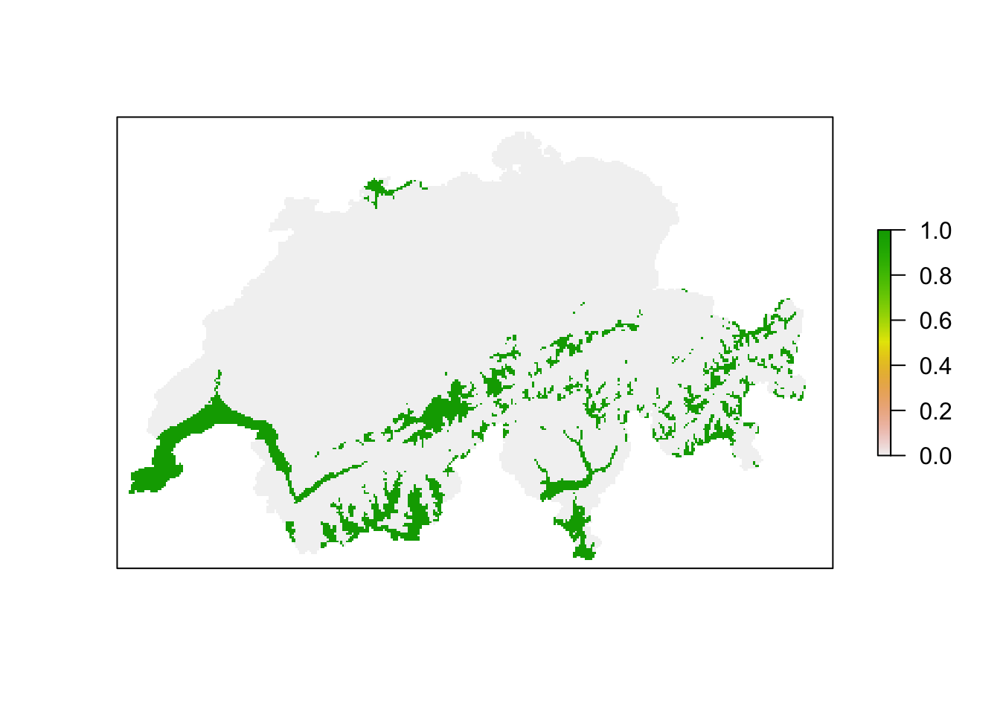
Another way to assess novel environments is using “Environmental overlap masks” from Zurell, Elith, and Schroeder (2012). The main difference to MESS maps is that also novel combinations of environmental variables are tested. As indicated above, this may be more important when using very flexible, non-parametric methods. But for the sake of completeness, I mention it here. The necessary codes can be downloaded from Github - in fact, we already sourced them together with the “Inflated response curves”.
# Environmental overlap masks (eo.masks) from Zurell et al. (2012). Values of 1 in the eo.mask will indicate novel environmental conditions
bio_fut_df$eo.mask <- eo.mask(avi_dfst[,my_preds], bio_fut_df[,my_preds])
r.eo.mask <- rasterFromXYZ(bio_fut_df[,c('x','y','eo.mask')])
plot(r.eo.mask, axes=F)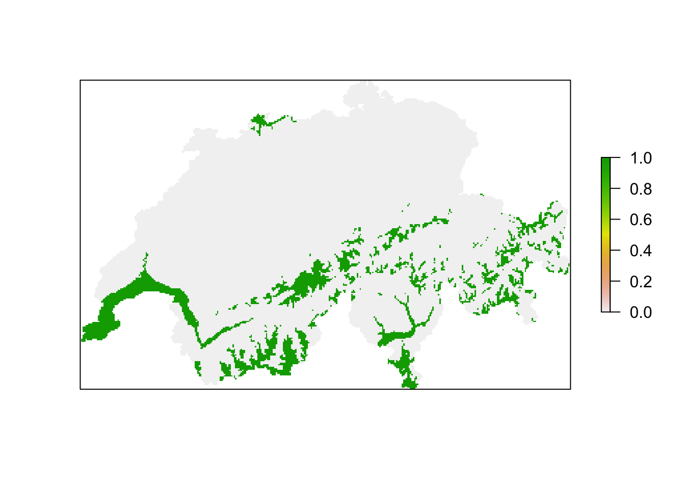
# Compare MESS maps and environmental overlap masks
par(mfrow=c(1,2))
plot(r.mess.mask, main='MESS', axes=F)
plot(r.eo.mask, main='EO', axes=F)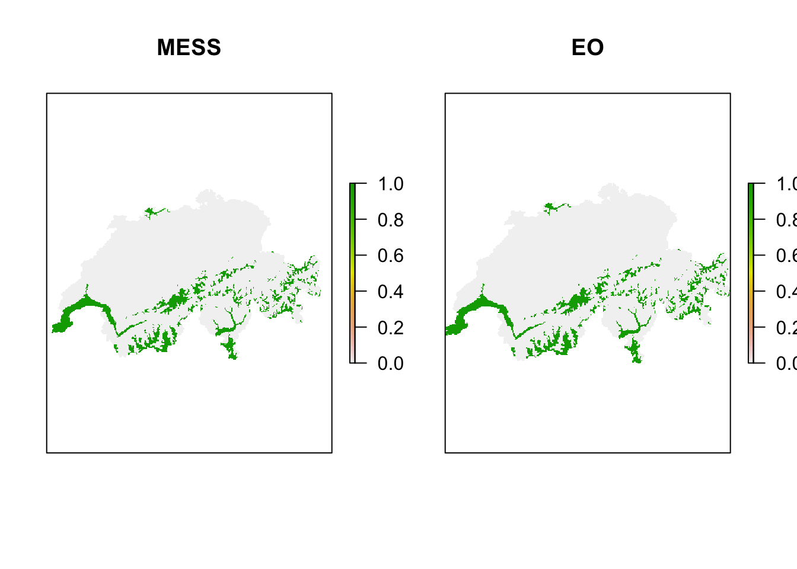
We can now explore model projections for analogous climates versus novel climates:
# Predictions to analogous climates:
bio_analog_df <- bio_fut_df[,c('x','y','pred_glm')]
bio_analog_df[bio_fut_df$eo.mask>0,c('pred_glm')] <- NA
plot(rasterFromXYZ(bio_analog_df), axes=F)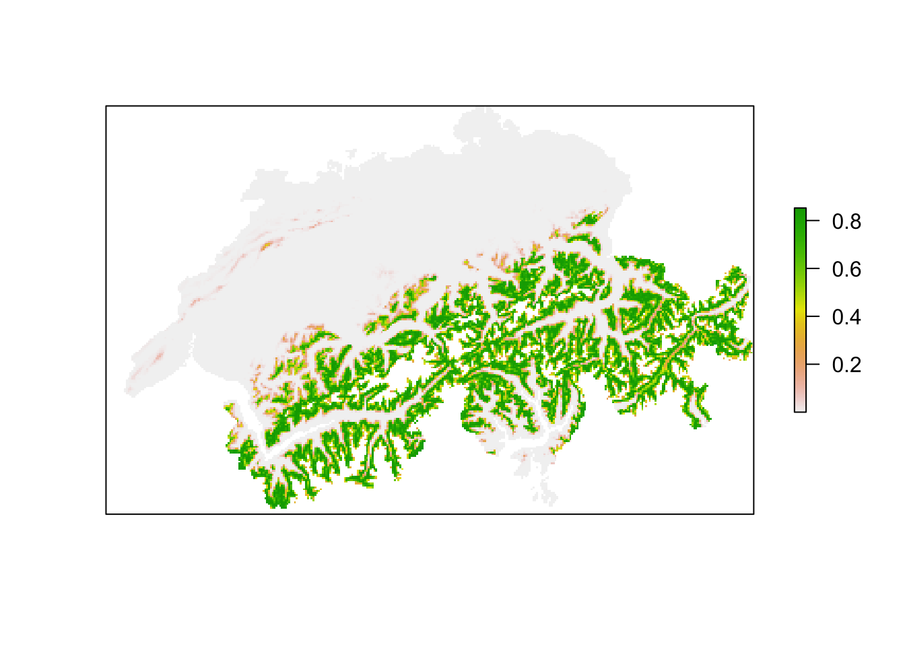
# Predictions to novel climates:
bio_novel_df <- bio_fut_df[,c('x','y','pred_glm')]
bio_novel_df[bio_fut_df$eo.mask==0,c('pred_glm')] <- NA
plot(rasterFromXYZ(bio_novel_df), axes=F)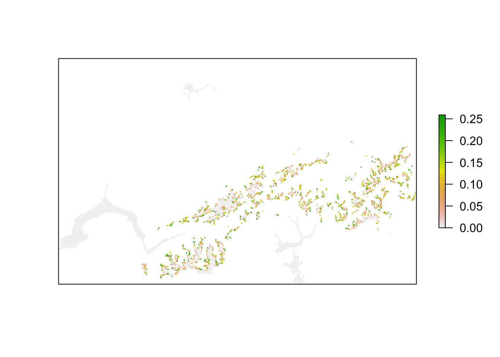
Once you have your predictions, you could answer all sorts of questions. For example,
Questions:
Allouche, Omri, Asaf Tsoar, and Ronen Kadmon. 2006. “Assessing the Accuracy of Species Distribution Models: Prevalence, Kappa and the True Skill Statistic (Tss).” Journal of Applied Ecology 43: 1223–32.
Araujo, Miguel B., Richard G. Pearson, Wilfried Thuillers, and Markus Erhard. 2005. “Validation of Species-Climate Impact Models Under Climate Change.” Global Change Biology 11: 1504–13.
Dormann, C. F., J. Elith, S. Bacher, C. Buchmann, G. Carl, G. Carre, J. R. Garcia Marquez, et al. 2013. “Collinearity: A Review of Methods to Deal with It and a Simulation Study Evaluating Their Performance.” Ecography 36: 27–46.
Elith, J., M. Kearney, and S. Phillips. 2010. “The Art of Modelling Range-Shifting Species.” Methods in Ecology and Evolution 1: 330–42.
Elith, J., and J. R. Leathwick. 2009. “Species Distribution Models: Ecological Explanation and Prediction Across Space and Time.” Annual Review of Ecology, Evolution, and Systematics 40: 677–97.
Franklin, J. 2010. Mapping Species Distributions: Spatial Inference and Prediction. Cambride University Press.
Guisan, A., W. Thuiller, and N. E. Zimmermann. 2017. Habitat Suitability and Distribution Models with Applications in R. Cambride University Press.
Guisan, A., and N. E. Zimmermann. 2000. “Predictive Habitat Distribution Models in Ecology.” Ecological Modelling 135: 147–86.
Liu, C., P. M. Berry, T. P. Dawson, and R. G. Pearson. 2005. “Selecting Thresholds of Occurrence in the Prediction of Species Distributions.” Ecography 28: 385–93.
Roberts, D. R., V. Bahn, S. Ciuti, M. S. Boyce, J. Elith, G. Guillera-Arroita, S: Hauenstein, et al. 2017. “Cross-Validation Strategies for Data with Temporal, Spatial, Hierarchical, or Phylogenetic Structure.” Ecography 40: 913–29.
Schmid, H., R. Luder, B. Naef-Daenzer, R. Graf, and N. Zbinden. 1998. Schweizer Brutvogelatlas. Verbreitung Der Brutvoegel Inder Schweiz Und Im Fuerstentum Liechtenstein 1993-1996. Swiss Ornithological Institute, Sempach, Switzerland.
Zurell, D., J. Elith, and B. Schroeder. 2012. “Predicting to New Environments: Tools for Visualising Model Behaviour and Impacts on Mapped Distributions.” Diversity and Distributions 18: 628–34.
Zurell, D., N. E. Zimmermann, H. Gross, A. Baltensweiler, T. Sattler, and R. O. Wueest. 2019. “Testing Species Assemblage Predictions from Stacked and Joint Species Distribution Models.” Journal of Biogeography. https://doi.org/10.1111/jbi.13608.